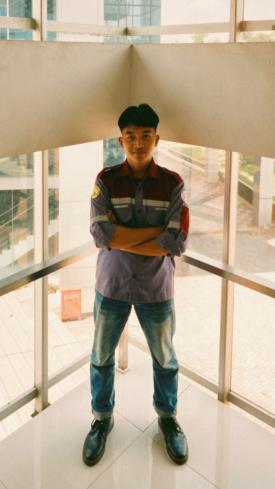

Portfolio Mahasiswa Teknik
Halo, saya Rijal Kamaluddin, mahasiswa Teknik Mesin Universitas Sultan Ageng Tirtayasa. Saya memiliki semangat untuk terus belajar, berkembang, dan berkontribusi bagi lingkungan sekitar. Bagi saya, menjadi mahasiswa Teknik bukan hanya tentang memahami ilmu keteknikan, tetapi juga tentang membangun karakter, kepemimpinan, dan kemampuan berkomunikasi. Melalui Duta Fakultas Teknik, saya ingin menjadi representasi mahasiswa yang aktif, inspiratif, dan mampu membawa dampak positif bagi fakultas maupun masyarakat.

Tiga hal utama yang mungkin Anda cari dari halaman portfolio ini.
Tentang Saya
Halo, saya Rijal Kamaluddin, mahasiswa Teknik Mesin Universitas Sultan Ageng Tirtayasa. Saya memiliki semangat untuk terus belajar, berkembang, dan berkontribusi bagi lingkungan sekitar. Bagi saya, menjadi mahasiswa Teknik bukan hanya tentang memahami ilmu keteknikan, tetapi juga tentang membangun karakter, kepemimpinan, dan kemampuan berkomunikasi. Melalui Duta Fakultas Teknik, saya ingin menjadi representasi mahasiswa yang aktif, inspiratif, dan mampu membawa dampak positif bagi fakultas maupun masyarakat.
Sedikit rangkuman langkah yang sudah dan sedang saya jalani.
Mengawali perjalanan sebagai mahasiswa Teknik Mesin, mulai mengenal dasar-dasar fisika teknik, matematika rekayasa, dan menggambar teknik.
Melanjutkan studi pada semester 2, memperkuat pemahaman dasar mekanika dan mulai mengeksplorasi software teknik dasar serta keterampilan pendukung lainnya.
Berencana terus mengasah kemampuan teknis melalui mata kuliah, organisasi, dan sertifikasi pendukung di bidang keteknikan.
Memahami dasar dengan benar sebelum melangkah ke materi yang lebih kompleks.
Di dunia teknik, detail kecil bisa berarti besar — saya mencoba membiasakan ketelitian dari sekarang.
Terbuka terhadap masukan, diskusi, dan kesempatan belajar di luar materi kuliah.
Kemampuan
Sebagai mahasiswa semester 2, saya masih dalam tahap membangun fondasi. Berikut kemampuan yang sudah saya pelajari dan terus saya kembangkan sepanjang perkuliahan.
Saya terbuka untuk diskusi seputar tugas, proyek kecil, organisasi, atau sekadar bertukar pikiran soal dunia teknik.
Mulai PercakapanSilakan hubungi saya melalui salah satu kanal di bawah, atau kirim pesan langsung lewat formulir.
Isi formulir ini, dan aplikasi email Anda akan terbuka otomatis dengan pesan yang sudah terisi.